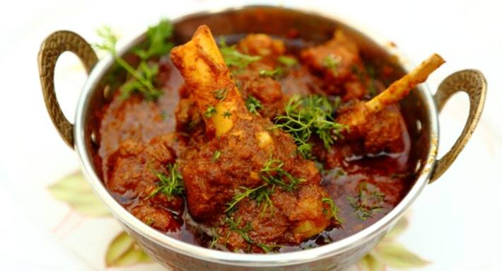

Lamb-rogan:-

Description
Cooking Time:-
Preperation Time: 45 Min Cook Time: 20 Min
Total Time: 15 Min
Ingrediants:-
1 kg chopped cube mutton pieces
1/2 cup ghee
1 cup mustard / refined oil
6 medium onion slices
1/2 tsp asafoetida
2 Bay leaves
2 tsp cumin seeds
2 tsp fennel seeds
2 cinnamon
4 cloves
5 cardamoms
4 tsp ginger-garlic paste (ginger >garlic)
2 tsp Corriender powder
150 gm hung curd
4- 5 tsp salt ( as required)
2 tsp chilli powder
2 tsp kashmiri Mirch powder
3-4 cups of water
Directions
- Wash the meat properly. Fry cumin and fennel seeds on a dry pan. Then cool it and make a fine paste of it. Take a bowl. Make a mixture of curd,
1 tsp salt,2 tsp chilli powder, 1 tsp kashmiri Mirch powder, 2 tsp Corriender powder and 4 tsp cumin-fennel seeds paste. Heat oil in a pan. Put 2 cinnamons, 2 bay leaves,
4 cloves, 4 cardamoms and 1/2 tsp asafoetida.
After this add sliced onions and ginger-garlic paste. Fry till the onion pieces are golden and starting the brown on the edges.
Then add the curd mixture. Keep stirring for about a minute. Mix the whole materials nicely in the mixture and keep stirring till a reddish
Add 4 cups of water and cover it with a lid. Cook it for 30-40 minutes on low flame until it tenders. After that oil starts come out and it becomes reddish in colour. Finally, take an another pan. Heat it up with 2 tsp oil, 2 tsp ghee and 1 tsp kashmiri mirch powder for 30 seconds. Then spread it over the cooked mutton curry.
Now, Mutton Rogan Josh is ready to be served. (you can serve it with steam rice, yellow polao or Nun)